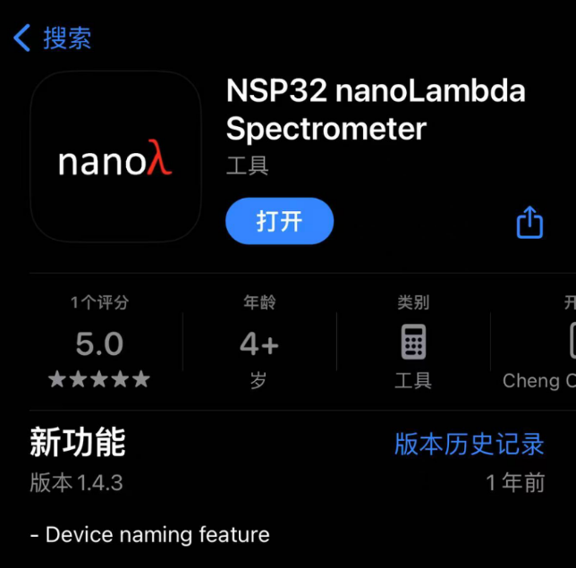
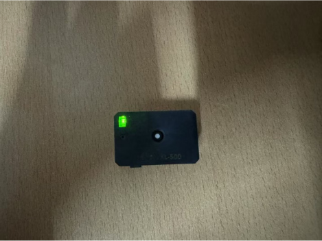
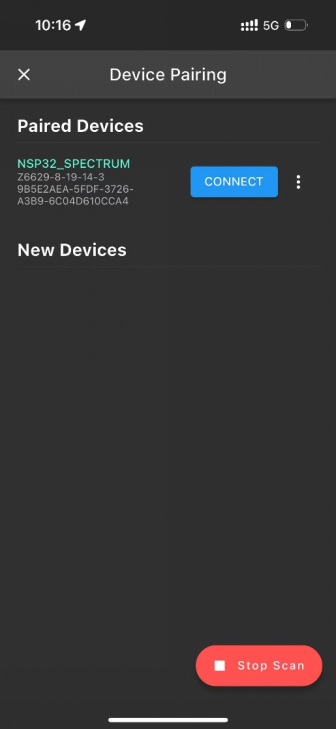
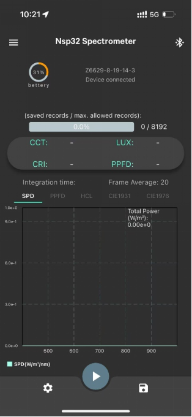
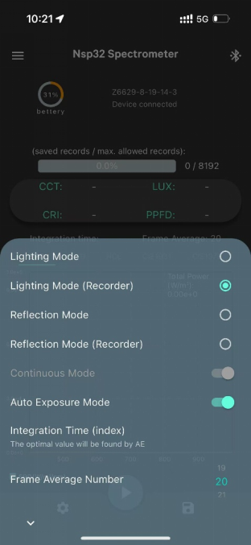
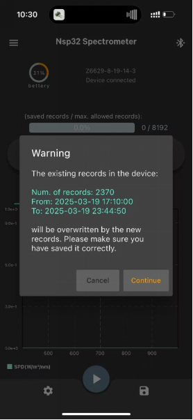
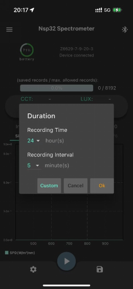
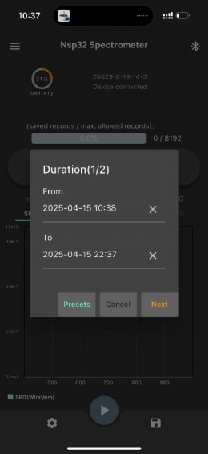
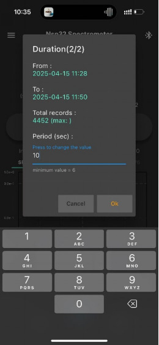
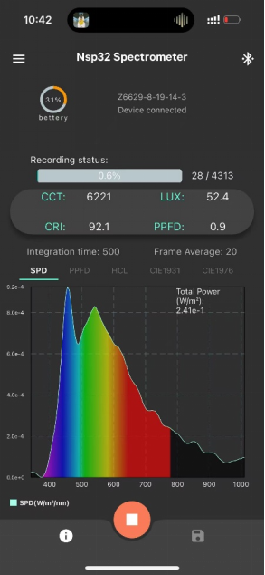

NSP32 光谱仪操作说明
本页用于实验期间设置光谱仪连续记录。请按步骤操作；如界面与图片略有差异，以关键参数为准。
模式：Lighting Mode (Recorder)
记录时长：起床后约 20 小时
记录间隔：10 秒
记录后断开蓝牙
关键警告：开始记录后，请点击右上角蓝牙图标断开连接。若记录期间蓝牙未断开，手机远离设备时可能导致记录停止。
操作总览
1
安装 App
应用商城下载“NSP32 nanoLambda Spectrometer”。
2
打开光传感器
绿灯闪烁表示设备可配对；开始测量后不得关闭。
3
蓝牙配对
打开手机蓝牙，在 App 中 find your device 并连接设备。
4
选择记录模式
进入齿轮设置，选择 Lighting Mode (Recorder)。
5
开始记录
点击播放图标；若提示覆盖旧数据，确认旧数据已保存后 Continue。
6
设置时间与间隔
Custom；起床后约 20 小时；记录间隔 10 秒。
7
断开蓝牙
记录开始后点击右上角蓝牙图标断开连接，让设备独立记录。
1安装 “NSP32 nanoLambda Spectrometer” 应用展开
- 在手机应用商城搜索并下载 NSP32 nanoLambda Spectrometer。
- 安装完成后暂时不要开始记录，先准备设备配对。

2打开光传感器，确认绿灯闪烁展开
- 打开光传感器。
- 当指示灯闪烁为绿色时，表示设备准备与手机配对。
- 一旦开始测量，不得关闭光传感器。
- 光传感器电池寿命至少约 7 天，可在整个测量期间保持打开。

3打开蓝牙，在 App 中连接设备展开
- 打开手机蓝牙。
- 打开 App，点击 find your device。
- 在设备列表中选择对应的光传感器。
- 点击 CONNECT 完成连接。

4进入齿轮设置，选择 Lighting Mode (Recorder)展开
- 连接成功后，会进入主界面。
- 点击左下角齿轮图标。
- 选择 Lighting Mode (Recorder)。


5点击播放图标；覆盖提示选择 Continue展开
- 点击底部播放图标，准备开始记录。
- 若出现 Warning，表示设备内旧记录将被新记录覆盖。
- 确认之前测量数据已经正确保存后，点击 Continue。
如果旧数据尚未保存，不要点击 Continue。先联系主试或完成数据保存。

6Custom 设置记录时长与 10 秒间隔展开
- 点击 Custom。
- 设置开始和结束时间：从起床后开始，持续约 20 小时。例如 09:00 起床，可设置为 09:00 至次日 05:00。
- 点击 Next。
- 设置 Period (sec.) = 10。
- 点击 OK，开始记录。
洗澡、睡觉时可摘下设备，立着放在桌面上。不要关闭设备。



7记录开始后，点击右上角蓝牙图标断开连接展开
- 确认记录状态已经开始。
- 点击屏幕右上角蓝牙图标，断开手机与设备连接。
- 断开后，设备会自行持续记录测量值。
必须注意：记录期间如果蓝牙没有断开，手机一旦远离设备，可能出现停止记录的情况。

开始记录前核对
- ✓设备绿灯正常，电量充足。
- ✓已选择 Lighting Mode (Recorder)。
- ✓记录时间覆盖起床后约 20 小时。
- ✓记录间隔设置为 10 秒。
- ✓开始记录后已断开蓝牙。